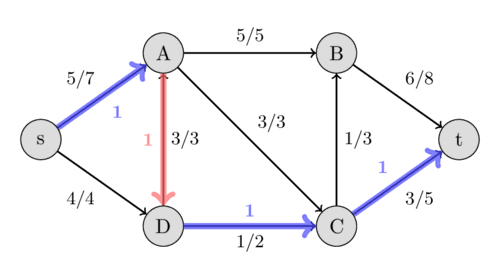

Minimum Cut and Maximum Flow¶
In this section, we examine a crucial problem in the domain of algorithms, through which many problems (including the matching problem) can be solved.
In this problem, we have a water network with several nodes connected by directed pipes (edges). Each pipe has a capacity, meaning the maximum water flow that can pass through it. Two specific nodes in this network are particularly important: the source and the sink. The goal is to determine the maximum amount of water flow that can be transferred from the source to the sink.
Consider the same graph from the previous problem. We want to remove a set of edges such that there is no directed path from the source vertex to the target vertex. The objective is to minimize the total capacity of the removed edges. This problem is called the minimum cut problem. In what follows, we will prove that in any graph, the maximum flow is equal to the minimum cut.
1class Graph:
2 def __init__(self, graph):
3 self.graph = graph # گراف رو ba adjacency list migirim
4 self. ROW = len(graph)
5
6# اگر اینترنت یارو آشغال باشه این میاد -> If the internet sucks, this appears
Proof¶
First, it is clear that the size of any cut is larger than the size of any flow. This is because removing any edge reduces the flow by at most its capacity, and as long as a flow exists, we have not yet encountered a cut. To prove that the maximum flow equals the minimum cut, we consider a maximum flow and derive a cut of the same size.
Consider a maximum flow. An augmenting path is defined as a path where: - If we traverse an edge in its original direction along the path, the edge must not be fully saturated. - If we traverse an edge in the reverse direction, there must be non-zero flow on that edge. For example, the following path is an augmenting path:
{kind=link}

In a maximum flow, no augmenting path exists from the source to the sink. If such a path existed, we could increase the flow: simply increase the flow on forward edges (blue edges) by one unit and decrease the flow on reverse edges by one unit. This would result in a net flow increase of one unit.
To find a cut with size equal to the maximum flow f, consider the set of vertices reachable from the source via augmenting paths. By the above argument, the sink vertex is not in this set. The inflow to this set is zero because if there were an edge from outside the set carrying flow into the set, the starting vertex of that edge would also belong to the set (as an augmenting path to it exists).
The total inflow and outflow of any vertex (except the source and sink) must balance to zero. For the source vertex, the net outflow is f. Thus, the total outflow from our defined set is exactly f, and since the inflow is zero, the outflow equals f.
All edges leaving this set must be fully saturated (otherwise, augmenting paths to vertices beyond these edges would exist). The total capacity of these edges is precisely f. Cutting these edges disconnects the source from the sink. Hence, we have found a cut of size f—the value of the maximum flow. This proves that the maximum flow equals the minimum cut.
Ford-Fulkerson Algorithm for Maximum Flow¶
We attempt to find an augmenting path from the source to the sink and use it to add one unit to the flow. We repeat this process until no augmenting path remains. The resulting flow will have a corresponding cut with equal capacity. Since we know all cuts are greater than or equal to all flows, the flow we have found is guaranteed to be the maximum flow.
The following code snippet implements this algorithm. To simplify the process, instead of separately checking forward and backward edges when finding paths, we create a reverse edge with capacity 0 for every original edge. Whenever flow is sent through an edge, we reduce its capacity and increase the capacity of its corresponding reverse edge.
1def ford_fulkerson(graph, source, sink):
2 # Create reversed edges with 0 capacity
3 for u in graph:
4 for v, capacity in graph[u].items():
5 if v not in graph:
6 graph[v] = {}
7 graph[v][u] = 0
8
9 max_flow = 0
10 path = bfs(graph, source, sink)
11
12 while path:
13 # Find minimum residual capacity in the path
14 flow = min(graph[u][v] for u, v in path)
15 for u, v in path:
16 graph[u][v] -= flow
17 graph[v][u] += flow
18 max_flow += flow
19 path = bfs(graph, source, sink)
20 return max_flow
توجه
The BFS function for finding augmenting paths is not shown here. In practice, this implementation can be optimized using more efficient algorithms like Edmonds-Karp (BFS-based Ford-Fulkerson).
int cnt, head[M], pre[M], cap[M], to[M], from[M];
int n,m;
void add(int u, int v, int w){
// ezafe kardane yale asli
from[cnt] = u;
to[cnt] = v;
pre[cnt] = head[u];
cap[cnt] = w;
head[u] = cnt++;
// ezafe kardane yale dogaan
from[cnt] = v;
to[cnt] = u;
pre[cnt] = head[v];
cap[cnt] = 0;
head[v] = cnt++;
}
int tnod = 0;
bitset <M> mark;
// say mikonim ke masir afzaayesh dahande peydaa konim
int dfs(int u, int mn){
mark[u] = 1;
if(u == tnod)return mn;
// yal haye ras u dar yek link list rikhte shode and.
for (int i = head[u]; i != -1; i = pre[i]){
// agar yale hadaf zarfiat nadasht bikhiaale aan mishavim
if (cap[i] == 0 || mark[to[i]]) continue;
// say mikonim ke jaryani be maghsad peyda konim
int s = dfs(to[i], min(mn,cap[i]));
// agar s = 0 nabashad, masir afzayesh dahande i vojood darad ke
// kam zarfiat tarin yale aan s vahed zarfiat darad
if (s){
// az zarfiate yal s vahed kam mikonim
cap[i] -= s;
// be zarfiate yaale dogan s vahed ezafe mikonim
cap[i^1] += s;
// elam mikonim ke masir s vahedi peyda shode ast
return s;
}
}
// masiri peyda nakardim
return 0;
}
int maxflow(){
int flow = 0;
while(1){
mark &= 0;
int s = dfs(0, inf);
// agar masiri peyda nashode bood flow = maxflow
if (!s) return flow;
flow += s;
}
}
In this algorithm, we use the DFS algorithm to find an augmenting path. This algorithm adds at least one unit to the existing flow in each step, and since the time complexity of DFS is linear, the algorithm has a time complexity of \(O(ef)\), where e is the number of edges and f is the maximum flow value.
If we had used the BFS algorithm instead of DFS, the bound \(O(ve^2)\) would also hold, though we omit its proof here.
Finding Vertex and Edge Connectivity Numbers¶
Using the maximum flow algorithm, we can obtain vertex and edge connectivity numbers in polynomial time.
To find the edge connectivity number, for each edge we add two directed edges with weight 1 in opposite directions between the two vertices. Then we find the maximum flow between every pair of vertices, which equals the minimum cut. Since the minimum cut doesn't cut both directions of an edge, the minimum cut of this directed graph is equivalent to the undirected graph's. As every cut disconnects two vertices, this value is greater than the graph's edge connectivity number. However, since the minimum number of edges required to disconnect any two vertices corresponds to the minimum of these cuts, this minimum cut value equals the graph's edge connectivity number. The time complexity of this algorithm is \(O(v^3e)\) because the solution is smaller than the number of vertices.
To find the vertex connectivity number, we construct a new graph where each vertex is split into two nodes: an input node and an output node. For each original edge, we add two directed edges: from the input node of one vertex to the output node of the other, and vice versa. For each vertex, we connect its input node to its output node. Edges corresponding to original edges have infinite capacity, while intra-vertex edges have capacity 1. To determine how many vertices need to be removed to disconnect two target vertices, we find the minimum cut between those two vertices in this transformed graph. By calculating this value for all vertex pairs, we obtain the vertex connectivity number. The time complexity of this algorithm is \(O(v^3e)\) because the solution is smaller than the number of vertices.
This book is made by The Shaazzz contributors.
It is publicly available with cc-by-sa license.
Last updated at اوت 27, 2025.
Rendered by Sphinx (4.3.2) and Minoo theme (Beta 0.9.7).